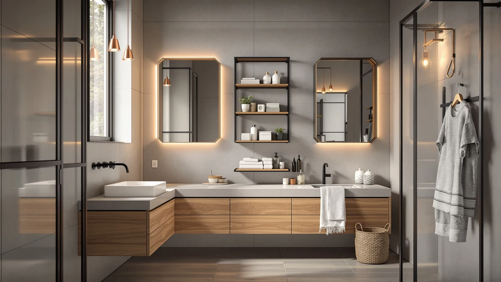

Things to Know Before You Buy
- Declutter before you buy anything. Most small bathrooms feel cramped because they hold products nobody uses, not because they lack shelves. Clearing out solves half the problem for free.
- Build up, not out. The walls above the toilet, beside the vanity, and behind the door are the largest untapped storage in the room. Floor space is finite; vertical space is mostly empty.
- Renting changes your options. If you cannot drill, adhesive caddies, tension rods, and over-the-door hooks add real storage and come down without patching walls.
- Match the hardware to the surface. Adhesive mounts need clean, dry tile and a 24-hour cure. Heavy loads on drywall need anchors or studs, or the shelf will pull out.
- Plan to spend $40 to $80. A full small-bathroom refresh with an over-toilet rack, a shower caddy, and under-sink organizers usually lands in that range.
Knowing how to maximize small bathroom storage comes down to two moves: storing less and using the space you already ignore. A typical apartment bathroom gives you maybe 25 square feet of floor, and most of that goes to the toilet, sink, and tub. The walls, the back of the door, and the cabinet under the sink sit half empty. This guide walks you through a five-step weekend project that turns those dead zones into shelves, hooks, and labeled bins.
You will not need a contractor or a renovation budget. The plan works whether you own the place or rent it, because every step has a no-drill option. Start by clearing the room and cutting your stash, then measure your walls, mount shelving, add adhesive caddies in the shower and on the door, and finish by zoning the under-sink cabinet. Done in order, the whole thing takes about three hours and costs around $60.
What You'll Need
- Supplies: Adhesive mounting strips or wall anchors, storage bins and baskets, shelf liner and adhesive labels
- Tools: Tape measure, drill or screwdriver with a level
Step 1: Empty the room and cut your stash in half
Before you learn how to maximize small bathroom storage with new shelves, take everything out. Pull every bottle, tube, towel, and gadget off the counter, out of the cabinet, and off the back of the toilet, and set it on a bed or table where you can see it all at once. Seeing the full pile is the point. You almost certainly own more travel shampoo, dried-out nail polish, and free hotel soap than you realized.
Now sort it into three groups: keep, toss, and store elsewhere. Throw out anything expired, empty, or crusted shut. Sunscreen, medication, and most cosmetics carry expiration dates, and old products take up the same room as the ones you actually use. Move backstock you bought in bulk, like the eight-pack of toothpaste, to a hallway closet or under the bed, since a small bathroom should hold what you reach for this month, not this year.
This step costs nothing and frees more space than any organizer you can buy. People skip it because shopping for bins feels more productive, but you cannot organize clutter, you can only relocate it. Finish the purge before you measure or mount a single thing.
Step 2: Measure your walls and map vertical space
With the room empty, you can finally see where the storage hides. Grab a tape measure and write down four numbers: the open wall height above the toilet tank, the wall width beside the vanity, the clear space behind the door when it is open, and the inside height and width of the under-sink cabinet. These four measurements decide what you buy next, and skipping them is why so many small-bathroom upgrades go wrong.
Sketch a rough box of the room on your phone or a scrap of paper and mark where each shelf, hook, or rack could go. Note the obstacles too: a light switch above the toilet, a towel bar you want to keep, the swing of the door. Knowing how to maximize small bathroom storage means filling vertical space without blocking the toilet lid or banging a shelf into the door every time you walk in.
Check what you are mounting into while you measure. Run your knuckles along the wall and listen for the hollow sound of drywall versus the solid thud over a stud, or use a stud finder if you have one. Tile usually means you will lean on adhesive mounts; drywall means anchors. Writing this down now saves you a second trip to the hardware store later.
Step 3: Build up with over-toilet and wall shelving
The single biggest win when you maximize small bathroom storage is the wall above the toilet. That space sits empty in most homes, and an over-the-toilet rack or a freestanding etagere drops three or four shelves into it without touching your floor plan. A freestanding unit straddles the tank and needs no drilling, which makes it the safe pick for renters. A wall-mounted shelf sits flush and looks cleaner, but it needs anchors or a stud.
Mount one or two more shelves on the open wall you measured beside the vanity. Keep the bottom shelf above head height where you stand, so you do not clip it, and reserve it for things you grab less often, like extra towels or a basket of backstock. Use the level you brought; a shelf that reads crooked by even a quarter inch is the kind of thing you notice every single day.
Load the new shelves with baskets rather than loose bottles. A row of three matching bins hides clutter, slides out like a drawer, and keeps small items from migrating to the edge and falling behind the toilet. This is where the storage bins from your supply list come in. For more on choosing between racks and cabinets here, see our best over-the-toilet storage guide.
Step 4: Add adhesive caddies in the shower and on the door
The shower and the back of the door are the two spots renters can use freely, and they add a surprising amount of room. Inside the shower, a rustproof adhesive caddy gets your shampoo and soap off the tub edge and onto the wall, which clears the ledge and stops bottles from sliding into the drain. Pick a rustproof model, because a humid shower corrodes cheap metal racks within months and leaves rust streaks on the tile.
Adhesive mounts live or die on prep. Wipe the tile with rubbing alcohol, let it dry, press the mount firmly, and then wait a full 24 hours before you hang anything on it. Skip the cure time and the caddy will peel off mid-shower with your conditioner attached. That waiting period is the most common reason people give up on no-drill storage. They blame the adhesive when the real problem was loading it too soon.
On the back of the door, hang an over-the-door rack or a few hooks for towels, robes, and a hanging basket of daily items. The door is a full panel of vertical space that costs nothing to use and blocks nothing when it swings. Our roundup of the best shower storage caddies covers the adhesive models that actually hold up.
Step 5: Organize the under-sink cabinet into labeled zones
The cabinet under the sink is the spot most people give up on, and the drain pipe is what makes it awkward. A single rigid box wastes the space around the P-trap, so use a height-adjustable two-tier rack that splits into a left tower and a right tower with the pipe running through the middle. That layout turns one cramped shelf into two full levels on each side, the last bit of usable space a tight bathroom has to give.
Add clear stackable bins for the small stuff: cotton rounds, sample sizes, spare toothbrushes. Clear bins let you see what is inside without pulling everything out, and stacking them builds zones at any height. Lay a sheet of shelf liner on the cabinet floor first so leaks from cleaning bottles wipe up instead of staining the wood.
Finish by labeling each zone: hair, cleaning, first aid, backstock. Labels feel fussy, but they are what keeps the cabinet organized after the third person in the house digs through it. For a deeper walkthrough of this cabinet, read our guide on how to organize under-sink storage.
Common Mistakes to Avoid
The first mistake is buying organizers before you declutter. A storage bin full of products you never use is still clutter, and you will have spent money to relocate the problem instead of solving it. Clear the room first, then shop for what is left.
The second mistake is overloading adhesive mounts or skipping the cure time. Manufacturers list a weight limit and a 24-hour wait for a reason. Hang a heavy bottle on a fresh mount and it peels off the tile, often taking a strip of paint with it. When you maximize small bathroom storage with no-drill hardware, patience during install is half the job.
A third mistake is matching shelf to wall incorrectly. People drive a screw straight into drywall with no anchor, then watch the shelf sag and rip loose under a stack of towels. Hollow drywall needs a proper anchor or a stud; tile needs the right bit or an adhesive solution.
The last mistake is filling every inch you open up. A small bathroom that is packed wall to wall feels as cramped as a cluttered one, just neater. Leave some shelves half empty and some counter clear. Breathing room is part of why the space feels bigger, and it gives you somewhere to put the next thing you buy.
Our Top Picks
Step 4 leans on adhesive shower caddies, so here are the three we reach for first when we want to maximize small bathroom storage without drilling. Each mounts to tile with a strip, resists rust in a wet shower, and comes down clean if you move.

Editor's Pick
Joqixon Upgraded Extended Length Shower
The extended length gives you deeper shelves than a standard caddy, so a small shower holds more bottles on one strong adhesive mount.
$14.99
Check Price on Amazon
Best Value
EUDELE Adhesive Shower Caddy 5
Five stacked shelves turn one wet-zone wall into a full toiletry tower, which is a lot of storage for the price.
$19.99
Check Price on Amazon
Premium Choice
Moforoco Shower Caddy Shelf Organizer
A compact single-shelf organizer that fits the tightest showers and costs under ten dollars, ideal when you only need to corral shampoo and soap.
$9.99
Check Price on AmazonFrequently Asked Questions
How do you maximize storage in a small bathroom?
How can I add bathroom storage without drilling?
What is the cheapest way to maximize small bathroom storage?
How much weight can an adhesive shower caddy hold?
Where do you store towels in a small bathroom?
Verdict
To maximize small bathroom storage, work the five steps in order: declutter, measure, build up your walls, add adhesive caddies, and zone the under-sink cabinet. The first step does the heaviest lifting and costs nothing, and the rest turn empty walls and doors into shelves you actually use. Skip the clutter purge and even the best hardware just organizes things you do not need.
If you only buy one product, make it an adhesive shower caddy, and the Joqixon Upgraded Extended Length caddy is the one we reach for first. Its deeper shelves hold more in a small shower, it mounts to tile without drilling, and it comes down clean when you move. Pair it with a freestanding over-the-toilet rack and a two-tier under-sink organizer, and a cramped bathroom starts feeling like it has room to spare for around $60 and an afternoon of work.